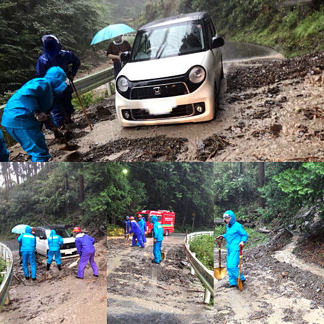

第8分団
| 里山風景が残り、ホタル舞う清流と自然豊かな緑に囲まれた原市場地区。この美しい里山の中に暮らす人々を守りたい。この地に生まれ育った者、この地に移り住んだ者、世代も境遇もそれぞれ違うが、この地に対する想いは一つ。『私たちに出来ることをただするだけ』一人ひとりの力は小さくても、高沢分団長以下32名の団員が集まれば一枚岩となり、消防ポンプ車と多機能型消防車を使用して、災害に全力で立ち向かいます。地域の皆様が安心して暮らせるように、日々の訓練と予防活動を続けて参ります。 |
令和2年度トピックス
◆2021年3月14日(日) 火防巡視穏やかな日差しの中、春の花が咲き始めましたが、この時季の消防団員は花よりマンホール、防火水槽の点検を行います。また、自然水利が取れる場所なども確認しながら、管内の巡視を行いました。山火事のニュースが例年よりも多かった今シーズン。建物火災も怖いのですが、山火事もとても怖いことに皆さんも気付いたのではないでしょうか？野焼き等の行為は大変危険です。また、山に入る際、火の取り扱いに十分ご注意願います。
◆消防団員のヘルメットが新しくなりました。
2021年より消防団員のヘルメットが新しく変わりました。銀色のヘルメットが新しい物で、赤色のヘルメットは今までお世話になったヘルメットです。ヘルメットは、災害現場で活動する消防団員の頭部を守ってくれる大切な保護具です。経年劣化等による痛みも激しいため『赤ヘル』は退団となります。今までずっと一緒だった相棒が居なくなる寂しさもありますが、新しい相棒の『銀ヘル』を大事に使用させて頂きます。しかし我々消防団員の願いは、この『銀ヘル』が活躍しないことです。市民の皆様は2021年も火の用心でお願い致します。
◆2020年12月25日(金) 歳末特別警戒
地域の皆様が安心･安全に年末をお過ごし頂けるよう、12月25日から30日に消防車で警戒しております。感染症予防に取り組みながら活動しておりますので、ご理解のほど宜しくお願い致します。冷え込みのキツイ夜間、車両の窓を全開にして震えながら団員は頑張っております。例年ならば地域の皆様やOBの方々に、警戒中の報告をさせてもらっておりますが、今年はこのホームページ上から報告させてもらいます『第八分団警戒中異常ナシ!』。
◆2020年11月28日（土）消防特別点検【中止】
早朝、朝間詰めの頃の寒さに震えながらも点検への準備をする…それが例年の特別点検の風景でした。残念ながら新型コロナウイルス感染拡大防止を受け、今年の特別点検は中止となりました。表彰された団員に手渡すはずの賞状等も、各部隊長が代表して受け取り簡略した表彰伝達式となりました。また、今後の行動についての会議と各部隊による管内火防巡視等を行いました。我々消防団員は、これからも市民の皆様の安心と安全のために感染防止に努めながら活動してまいります。一段と寒さが増してきて、各ご家庭で暖房器具を使用していることと思います。空気も乾燥するシーズンです。火の元と感染症に十分ご注意の上、引き続きご安全にお過ごしください。
◆2020年10月25日 全団員訓練
前半組と後半組に分け、感染防止に努め全団員訓練を行いました。観閲・服装規律の点検や中隊訓練など、特別点検に向けての訓練ですが、夜間訓練時と違い、明るい場所で行ってみると改善するために必要な課題が見えてきました。お手伝い頂きました第4分団の皆様、ありがとうございました。この日は天候も良く、市内の観光施設にはたくさんの人が遊びに訪れておりました。活気溢れる市内を見ると嬉しくなりますね。しかし、場所によっては道路渋滞も発生していました。慣れた場所でも状況が違う事がありますので、市民の皆様も交通事故等に十分ご注意下さい。
◆2020年10月20日 第8分団分団訓練
11月に行われる中隊訓練の予習を、第6分団・第7分団と合同で行いました。第8分団は、中隊の第1小隊を担当するのですが、第2小隊と第3小隊の行進の基準になる重要なポジションになります。皆で息を合わせた中隊訓練が披露できるよう、当日まで訓練予習を重ねて参ります。10月もそろそろ終盤、夜は気温が下がってきました。行進している時は大丈夫なのですが、じっとしていると身体が冷えてきます。市民の皆さんも暖かくしてお過ごしくださいね。もちろん、暖房器具を使用する際は火の用心でお願い致します！
◆2020年9月27日 分団訓練
飯能日高消防署屋外訓練場にて、11月に行われる特別点検に向けた訓練予習を行いました。今年は、高沢分団長が中隊訓練の指揮を執るため気合が入っております。本番で規律厳正にして士気旺盛な中隊訓練をお披露目できるよう、訓練をしていきます。この日、別会場で新入団員は普通救命講習を受講しました。少しずつ消防団員らしくなってきたかな？
◆2020年9月13日 第8分団中継送水訓練
赤沢にある天ヶ瀬工業さんのご協力を頂き、第8分団一部のポンプ車と二部の可搬ポンプを使用した中継送水訓練を実施しました。道路から15メートル下の河原へ可搬ポンプを下ろしポンプ車へ中継、合計10本のホースを使用した実践的な訓練です。また、林野火災に対応するために、ウォータールートを使用した訓練も行いました。実際の火災では、水利の無い場所や消火に必要な水が不足する場所で活動する消防隊員が消火活動出来るよう、自然水利や防火水槽から送水して消火活動の手伝いをするのが消防団の役割の一つです。反省点もたくさん見出す事ができ、実りある訓練となりました。お忙しい中お集まり頂きました後援会の皆様、ありがとうございました。
◆2020年9月4日 夜間警戒活動
ラジオから流れる気象情報が、最大瞬間風速80メートル以上の台風10号が沖縄・九州方面に近づくことを知らせる。我々の想像の遥か上を行く凄まじい勢力。この日、第8分団一部のポンプ車に乗車した団員達は原市場地区を警戒しながら、昨年の台風19号で我々が経験したことのない状況だったことを思い出す。飯能市内においても、台風の風水害により至る所に被害を受けました。今季、日本列島近くは太平洋上の海水温が平年よりも高く、関東にも同等の勢力で台風が近づく事も考えられます。日頃から飲料水や非常食のローリングストックをしていますか？家の周りに風で飛ばされやすいものは有りませんか？ブルーシートやロープ、土嚢の準備はされていますか？『備えあれば憂いなし』普段なら簡単に手に入るものでも、いざとなると手に入らないこともあります。そして何より、早めの避難・命を守る行動が一番大切です。災害は台風だけではありません。ご家族で防災・減災について話し合い、各ご家庭で再度点検をしてみては如何でしょうか。
◆2020年8月23日 第8分団1部ポンプ車点検および放水訓練
飯能日高消防署屋外訓練場にて、ポンプ車のポンプ点検および放水訓練を1部の団員が行いました。経験豊富な団員が集まる1部の団員は、ポンプ操作と送水圧力計や連成計の見方をおさらいします。筒先側ではしっかりと防火服を着て訓練。銀色の防火服の中は、汗でびっしょりです。今回の点検は、9月に行われる中継送水訓練に向け実施されました。これとは別に各詰所では、定期的にポンプや救助資機材の点検を行っております。詰所近隣にお住いの皆様には、点検時の音等でご迷惑をお掛けしておりますが、引き続きご理解を賜りますよう、よろしくお願い申し上げます。
◆2020年8月18日 第8分団2部可搬ポンプ点検および放水訓練
飯能日高消防署屋外訓練場にて、多機能型消防車に搭載されている可搬ポンプの点検および放水訓練を、2部の団員が行いました。新入団員にも、可搬ポンプの操作手順を丁寧に2部部長が教えます。2部部長は消防操法大会埼玉県大会に小型ポンプ（可搬ポンプ）の3番員として出場した実力者です。参加した団員も、ポンプ操作手順を確認していきます。また、筒先側でも団員が交代しながら放水を行います。甲高く唸るポンプのエンジン音を聞くと、ついつい訓練に熱が入ってしまう夏の夜でした。
◆2020年8月7日 夜間警戒活動
警戒中異常ナシ!!! 消防団は夜間に消防車に乗り、管轄地域を警戒する『夜警』を行っています。赤色回転灯を回し警鐘を鳴らしながら、地域の皆様に『火の用心』を促します。同時に不審者等にも目を光らせ、地域の皆様が安心・安全に暮らせるように、何かあれば警察等関係部署へ通報します。この日運転する団員は、消防団に対するイメージが体育会系なことから入団を躊躇していたのですが、『もっと早くから入団していれば良かった』と話しています。第8分団では、新入団員を随時募集しています。消防団に入団することで、趣味の幅や新たな仲間との出会いが広がるかもしれませんよ!
◆2020年7月5日 全団員訓練
今日の訓練は、新入団員の教育も含め前半組（2・4・6・8・10・11分団）と後半組（1・3・5・7・9分団・団本部）に分かれ、参加人数を減らして行われました。個人間隔2メートルのソーシャルディスタンスを保って集合し、コロナ禍における今後の新しい訓練方式を模索しながらの訓練です。様々な職業が集まる消防団は、訓練・活動内容によっては感染リスクが高くなるため、今後も様々な対策を講じて活動して行きます。
◆2020年6月21日 分団訓練
本来であれば消防操法大会の訓練に明け暮れていた時期。新型コロナの影響で、消防団も行事や訓練は全て中止となりました。私たち消防団員も新しい活動方法を模索しております。感染防止に努め、部隊内に小さなグループを作り夜警活動をし、コロナ禍の中も地域の安心と安全のために活動しておりました。そのような中、4月に2名の新入団員を迎え入れました。市内在学のアキヤ君（19）と管内在住のヒロサワ君（20）、とても頼もしい若人です。この日は中藤グランドをお借りし、新入団員を交え規律や訓練礼式の基本動作訓練を行いました。短時間ではありますが屋外で行う訓練は心地良く、久しぶりに集まる仲間の元気な顔を見れば、自然と笑顔があふれます。第8分団では、今後も新型コロナ感染防止に留意しつつ、団歴を問わず心新たに消防団活動に邁進して参ります。地域の皆様におかれましても、引き続きご安全にお過ごし下さい。
令和元年度トピックス
◆2020年3月8日（日）火防巡視だんだんと春が近づいておりますが、朝晩は石油ストーブなどの暖房器具を取り扱う日が続きます。まだまだ空気も乾燥していますので、市民の皆さんは火器取扱いやご自宅周りに燃えやすい物を置かないよう、日頃からお気を付けください。第8分団は火防巡視の一環として、原市場地区にある全ての防火水槽の点検と自然水利の確認などを行いました。担当する管内は広いため、しっかりとした火防巡視を行うために、前週にも同様の点検を行いました。中藤にある2部の詰め所では、水利点検が終わった後に積載車の資機材を全て下ろし、車両の清掃と積載ポンプや救助資機材の点検も行いました。このように、日頃から資機材の管理と器具愛護を怠らない消防人を目指し、活動しています。そしてこの日は、来年度の入団予定者2名と顔合わせ、二十歳の若者です。正式に消防団員になるのは4月からですが、団員が整備清掃する積載車や資機材に興味津々のようでした。第8分団では、仲間になってくれる社会人や学生を随時募集しています。興味のある方は、この機会に是非！
◆2020年2月23日（日）体力強化訓練《台風19号の爪痕にも負けないマンパワー》
本来であれば体力強化と親睦を深める分団対抗ソフトボール大会の開催予定でしたが、今年は昨年の台風19号による被害があった岩沢運動公園および阿須運動公園周辺の清掃、台風による流木や側溝の土砂撤去を全分団で行いました。我々第8分団は、運動場のネットや植栽に絡みついた草木の撤去、土砂で埋まった側溝の掻き出し作業を行いました。上流から流されてきた大量の石や砂と格闘、代わるがわるスコップを持ち続け、手を休めることなくヘドロ臭の残る土砂を掻き出す。気づけば40メートル近く掻き出していました。一人では到底できない事でも、人が集まればこんなにも作業が捗ることに改めて驚きました。仲間とともに汗を流し、清々しい気持ちと心地よい疲労感を得ることができました。
◆2020年2月2日(日) 8分団研修旅行
今年は立川市にある立川防災館で、地震による倒壊家屋からの救出救助・搬送などを学習しました。大震災の怖さとともに、なによりも減災への取り組みが大切だと感じました。いつか来るかもしれない大地震、自分自身はもちろんのこと大切な家族やご近所さん、地域に住む人々を助けることができる資器材の取扱い訓練や学習を、消防団員は日ごろから行っています。消防団員になれば、あなた自身が大切な人を守ることができるのです。私たち第8分団は新しい仲間を待っています。あなたも大切な人と地域を守れる人になってみませんか？
◆2019/11/23（土）令和元年消防特別点検
11月23日、冷たい雨が降る中、令和初の消防特別点検が挙行されました。我が第8分団は、訓練礼式の中で高沢分団長の指揮の元、小隊訓練の行進間を披露しました。この日を迎えるため夜間訓練等を繰り返した成果が出て団員それぞれが息を合わせた行進をおこない、観覧して頂いた方々からお褒めの言葉を頂くことができました。また、無火災分団として表彰されました。これは、原市場地区の皆さまお一人おひとりの日頃の火災予防に対する意識の高さが表彰されたのだと思います。お足下の悪い中お集まり頂きました地域の皆さま、ありがとうございました。原市場行政センターに於ける原市場自治連合会主催の表彰伝達式では、高橋消防後援会会長より団員へ表彰の授与がされました。各関係者の方々には、ご多用の中会場設置とご参列頂き誠にありがとうございました。今後とも地域防災のために団員一丸となって活動してまいりますので、地域の皆さまのご理解とご協力を宜しくお願い致します。
◆台風19号
この度の台風19号で被災された方々と地域の皆様に心よりお見舞いを申し上げます。我々第8分団は、台風の風雨が強まり大雨特別警報のレベルが上がる度に、消防車による警鐘およびスピーカーでの避難の呼び掛けを管内で実施致しました。早めの避難にご理解とご協力頂きました市民の皆様には、心から感謝申し上げます。避難先である原市場小学校には、400人を超える市民の方々が一時避難されました。川は大雨により我々も見たことのない恐ろしい濁流と化し場所によっては道路まで越水し大きな道路陥没も発生、山間部では土砂崩れがいたるところで発生しそこに乗り上げてしまった乗用車の救出や、車道に流された鉄製のごみ集積所の移動をするなど警戒中に危険排除を行いました。今後、我々が経験したことのない自然災害がいつ発生するかわかりません。市民の皆様におかれましては、警報が発令されましたらテレビやラジオの情報を確認し速やかな避難をするなど、命を守る行動を第一に考えて頂ければと思います。また、日頃から防災に備え、飲食等必要と思われる物の備蓄を各ご家庭でお願い致します。

◆中継送水訓練
7月7日、大字南地内において第7分団と合同で中継送水訓練を行いました。沢をせき止めて水を確保しポンプ車から中継する可搬ポンプを経由して火点まで合計20本400メートルのホースを繋いで放水する訓練や、ウォータールートを使用した訓練などを行いました。高低差があり元ポンプや中継ポンプからは火点が見えないため、より実践的な訓練でした。また、街分団と山分団では装備も異なります。エンジンとポンプを別々に背負って山中へ運搬し消火活動ができるウォータールートを7分団の団員に実際に使用してもらい、如何なる場所どんな装備にでも対応できるように、分団の垣根を越えて有意義な訓練となりました。小雨降る中を激励に駆け付けてくださいました内田健次・鳥居誠明両議員をはじめ第7・第8分団両後援会の皆様、訓練指導をして頂きました名栗分署第3担当内野中隊長と隊員の皆様、ご講評頂きました稲荷分署市川分署長、大変ありがとうございました。我々消防団は、森林文化都市である飯能の山林も守っています。山に入る皆さん、火の不始末には十分ご注意願います。